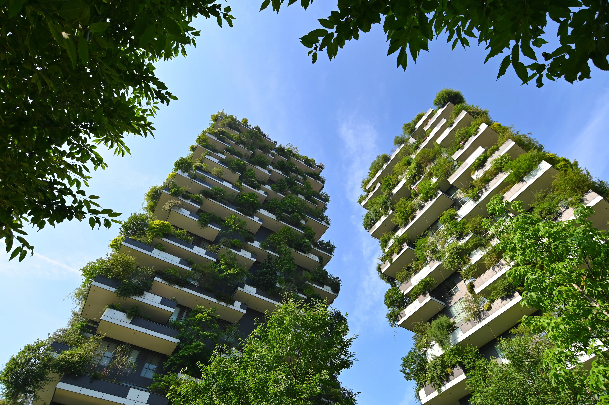
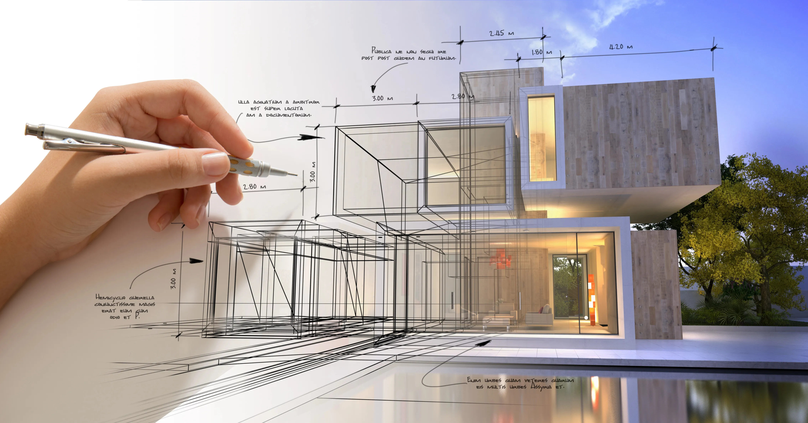

If you're building, renovating or extending a home in NSW, your Development Application likely needs a BASIX Certificate and a NatHERS energy rating. We prepare both — fast, accurate, and accepted by council every time.
Every service below is prepared in-house by our accredited assessors and lodged in the format your certifier or council expects.
BASIX and NatHERS aren't optional add-ons — they're checks the NSW Government requires before council or a private certifier will approve most residential building work. Without them, your Development Application can't be lodged.
You'll generally need a BASIX Certificate and/or NatHERS rating if you're building a new home, adding a second dwelling, doing a major renovation or extension, or converting a building's use. If you're not sure, tell us what you're planning and we'll confirm what applies — free of charge.

Send us your plans today and we'll come back with a fixed-price quote and turnaround estimate — usually within the hour.